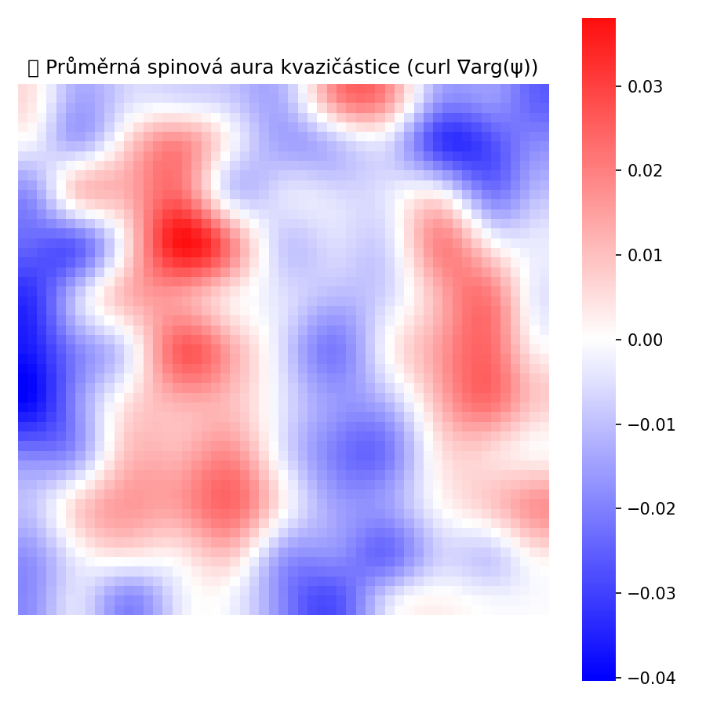

| Property | Value |
|---|---|
| Dominant frequency | 5.00e+18 Hz |
| Energy | 3.31e-15 J |
| Wavelength | 6.00e-11 m |
| Effective mass | 3.69e-32 kg |
| Mass relative to electron | 4.05e-02× electron mass |
| Max lifespan | 200 steps |
| Median lifespan | 7 steps |
See full spectrum: spectrum_log.csv
Lineum Field Equation:
ψ ← ψ + 𝛌̃ + ξ + φψ − δψ + ∇²ψ + ∇φ
φ ← φ + (|ψ|² − φ) + ∇²φ
Term definitions:
| Term | Description |
|---|---|
| ψ | Complex scalar field – field tension |
| linon | Nonlinear probabilistic particle generation |
| fluktuace | Quantum phase noise (oscillatory noise) |
| φ⋅ψ | Interaction with φ – modulates ψ evolution |
| disipace | Field damping (decay term) |
| difuze | Spatial diffusion (Laplacian) |
| gradient(φ) | New: directional influence – ψ follows φ curvature |
| α (|ψ|² − φ) | Reaction of φ to field density |
| β · difuze | Mild diffusion to form spatial φ gradients |


Analýzou pole curl(∇arg(ψ)) v okolí stovek kvazičástic
vznikla průměrná „spinová aura“. Výsledek ukazuje dipólovou strukturu
s protisměrnou rotací – podobně jako reálné částice nesou kvantový moment hybnosti.

This simulation supports an alternative interpretation of gravity: not as a force, but as an emergent drive toward co-existence. Particles do not attract one another – instead, they shape the φ field in a way that guides others toward them. The result is motion not due to pulling, but due to a shared directional preference.
The name Lineum is a coined term from the Latin linea ("line" or "thread"), symbolizing the filament-like tension structures that emerge in the field. It refers to a hypothetical quantum field defined by local, nonlinear evolution rules. This field exhibits spontaneous formation of vortices, oscillations, topological effects, and quasiparticles.
Pronunciation: line-um (Czech: lineum, as written).
The name follows a tradition of physics-inspired constructs such as graviton, inflaton, or axion—terms that suggest emergent dynamics without predefining their exact physical nature.
(c) Lineum – emergent quantum field simulation